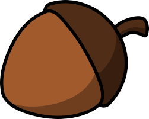
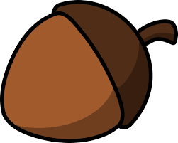

How It's Made
to go along with this website I have made a few pieces to spread the word. I created a model of a squirrel house, a palm sized acorn, and a sticker of a squirrel crossed out. I will explain the steps I took to make them and put pictures of each item. Here we go.....
Squirrel House Model
Although we believe squirrels live in trees we are wrong. Squirrels don't live in trees because there is not enough light to make their bombs. I was done a bunch of research attempting to find where squirrels really live. Finally I found a squirrel running out of a small house made from rocks. I sketched what it looked like, came back to cut the pieces, and then glued them toegther.


 This project was brought to you by cardboard and hot glue! The first picture is what the house looks like all together digitally. The other three pictures are showing you what I did to cut out those pieces. We used a Laser Cutter to cut cardboard in those shapes. After all the shapes were cut I hot glued the sides together. This item took about three days, in total, to complete. It would have taken two if Mr. Rice didn't lose my flash drive.
The next part I made was the three dimensional acorn. This piece took a lot more time because I had to outline the picture in Inventor and then revolve half of it around an axis point. Don't even get me started on the stem. I had to have Mr. Rice help me on that because there were so many issues. By the way Thanks Rice!!! To make this piece we used the 3D printer.

This project was brought to you by cardboard and hot glue! The first picture is what the house looks like all together digitally. The other three pictures are showing you what I did to cut out those pieces. We used a Laser Cutter to cut cardboard in those shapes. After all the shapes were cut I hot glued the sides together. This item took about three days, in total, to complete. It would have taken two if Mr. Rice didn't lose my flash drive.
The next part I made was the three dimensional acorn. This piece took a lot more time because I had to outline the picture in Inventor and then revolve half of it around an axis point. Don't even get me started on the stem. I had to have Mr. Rice help me on that because there were so many issues. By the way Thanks Rice!!! To make this piece we used the 3D printer.

 The 3D printer uses heated plastic and traces the areas specified. It then goes back and forth placing levels of plastic until you have the completed object. The printing process took about 18 hours to finish. It has to go slow otherwise it may mess up you piece and you'll have to start over.
The last creation is the sticker. It was designed with CorelDraw and sent to a machina called a vinyl cutter. The function is in the name...it cuts vinyl. Once cut you carefully peel off uneeded pieces. Then cover you sticker with transfer tape and peel off, make sure all wanted parts end up on the transfertape. lastly put the sticker where you want! I wanted this sticker to be on my bedroom door so I can be reminded of how much squirrels suck everytime I walk in.
The 3D printer uses heated plastic and traces the areas specified. It then goes back and forth placing levels of plastic until you have the completed object. The printing process took about 18 hours to finish. It has to go slow otherwise it may mess up you piece and you'll have to start over.
The last creation is the sticker. It was designed with CorelDraw and sent to a machina called a vinyl cutter. The function is in the name...it cuts vinyl. Once cut you carefully peel off uneeded pieces. Then cover you sticker with transfer tape and peel off, make sure all wanted parts end up on the transfertape. lastly put the sticker where you want! I wanted this sticker to be on my bedroom door so I can be reminded of how much squirrels suck everytime I walk in.

 This was one of the easier projects to complete because it's only a few steps. First you import the image, then bitmap trace it, and lastly print it. It's fairly simple!
This was one of the easier projects to complete because it's only a few steps. First you import the image, then bitmap trace it, and lastly print it. It's fairly simple!
Final Words
This is the end of my website. I hope you learned a bit more about the dangers of squirrels. Hopefully you now know to shot squirrels on sight. Also I am sorry for any spelling mistakes. The app I used to create the website didn't have a auto-correct. Last thing and I swear I'm done...I really hope you liked this because it took almost a week just for the website, the other parts in total took about another week and a half. Thank you for reading!!!!!!!!!